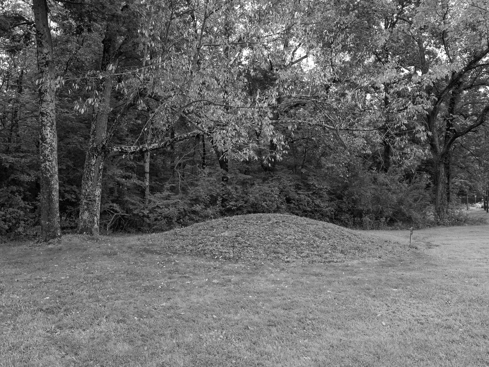
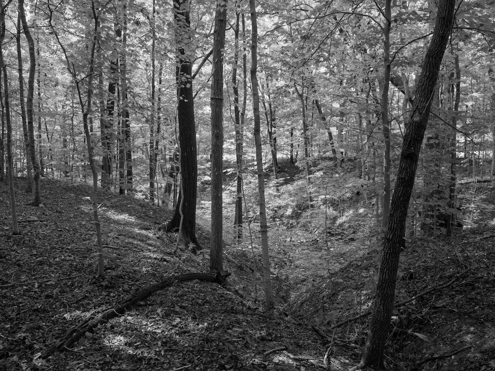
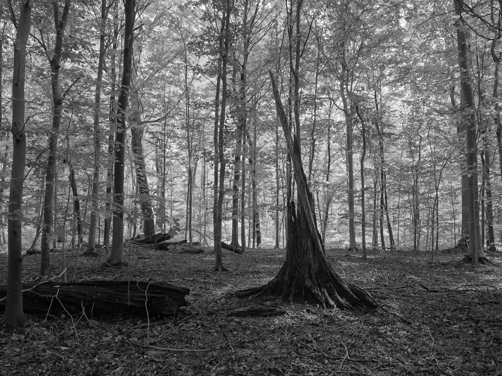
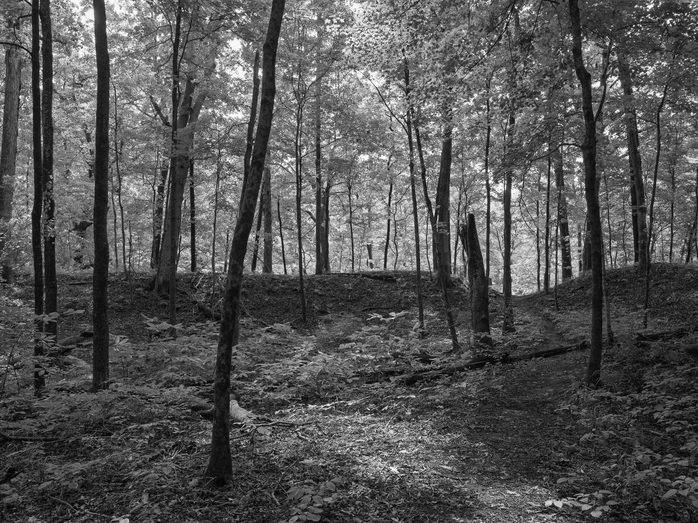
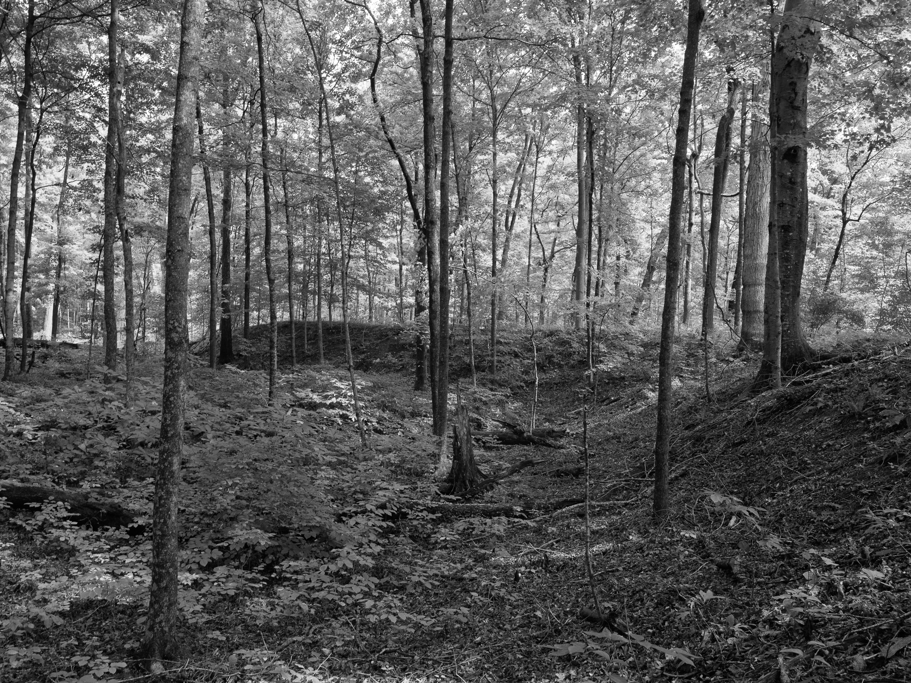
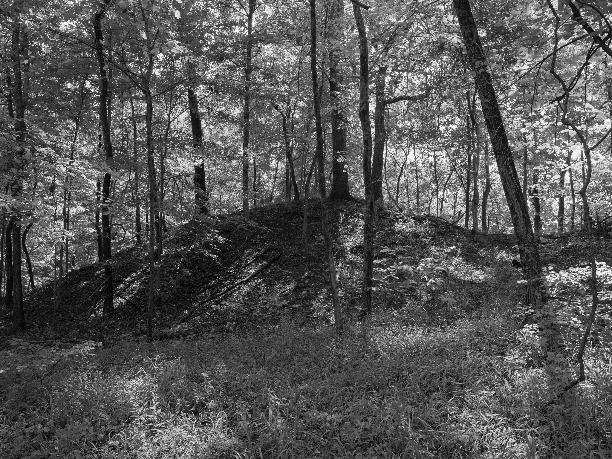
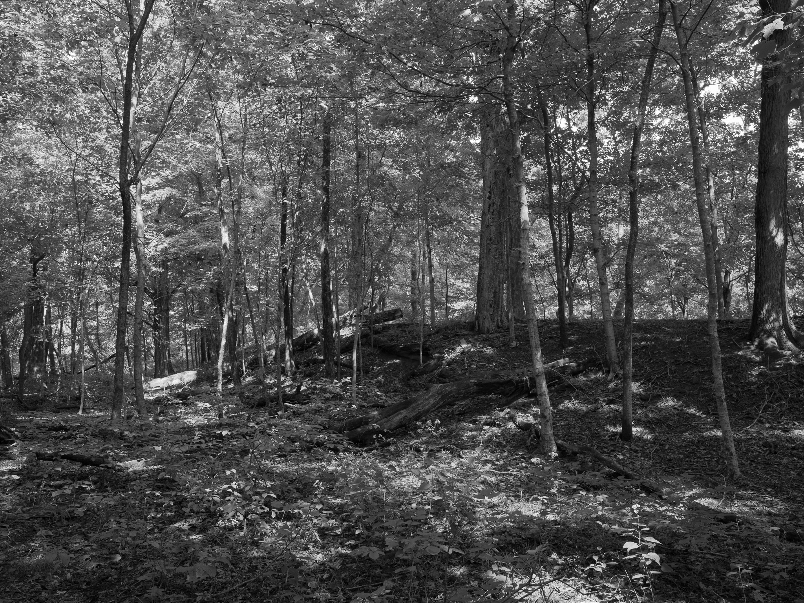

Public Lands Institute
Map
Images
Archive
About
Support
Fort Ancient Earthworks and Nature Preserve
OH

Fort Ancient Earthworks and Nature Preserve 1 · 2026-09-11
_DSF4649.jpg

Fort Ancient Earthworks and Nature Preserve 2 · 2026-09-11
_DSF4653.jpg

Fort Ancient Earthworks and Nature Preserve 3 · 2026-09-11
_DSF4654.jpg

Fort Ancient Earthworks and Nature Preserve 4 · 2026-09-11
_DSF4657.jpg

Fort Ancient Earthworks and Nature Preserve 5 · 2026-09-11
_DSF4659.jpg

Fort Ancient Earthworks and Nature Preserve 6 · 2026-09-11
_DSF4672.jpg

Fort Ancient Earthworks and Nature Preserve 7 · 2026-09-11
_DSF4674.jpg
View all 7 images →
Miamisburg Mound →